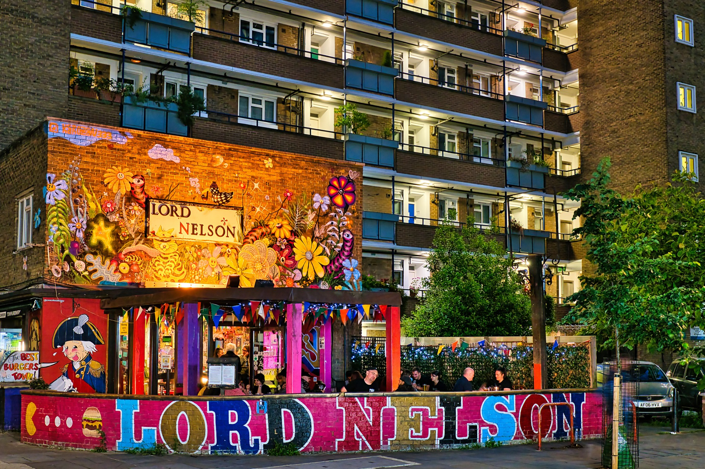

Healthier UK is a coalition of individuals and organisations from all four countries initiated by College of Medicine and British Society of Lifestyle Medicine but owned by everyone who wants to create the conditions for a healthier UK.

Health is not made in hospitals. It is made in everyday life: in secure housing and good work, strong relationships and safe neighbourhoods, access to nature and activity, and a good start in childhood. These are the primary drivers of health that keep a population well, productive and resilient.
Health stops being a cost to be managed and becomes an asset to be grown. The core role of the Health Departments should be to catalyse a shared national mission, not to remain the sole owner of a failing system.
A healthier workforce and a stronger economy; lower long-term pressure on the NHS and the public finances; communities more resilient to the pandemics, extreme heat and floods this decade will bring — and a clear, distinctive health mission that is unmistakably the government's own. A healthy nation is a stronger nation.
Britain has built a world-class service for treating illness. It has never built one for creating health. Doing so is the defining opportunity of this term — and it lowers long-term costs rather than adding to them.
Demand and spending keep rising while the nation's health falters. The move towards neighbourhood health is the right instinct — but it must amount to more than relocating top-down services. The opportunity now is to give it real purpose: health creation, led by places and communities.

A cross-government health-creation strategy — owned well beyond DHSC — framed around raising economic participation, cutting the costs of health failure, and strengthening national resilience.
Deepen and extend the mayor-led Prevention Demonstrators and support community-led health creation activity so devolved, place-based prevention and health creation becomes the operating model, not a pilot.
Progressively rebalance resources from acute care to support communities leading improvements in their own communities' health as well as prevention through NHS planning and the spending review, and weigh avoided future cost in decisions — invest to save, not spend to fail.
Minimum standards for health creation, with relational capacity and shared community delivery built in, and digital tools that strengthen human connection rather than replace it.



Everyday moments of connection, movement, nature, and community that create genuine health.


We'd love to hear from you. Whether you're interested in collaborating, sharing research, supporting our campaigns, or learning more about our work across the UK.